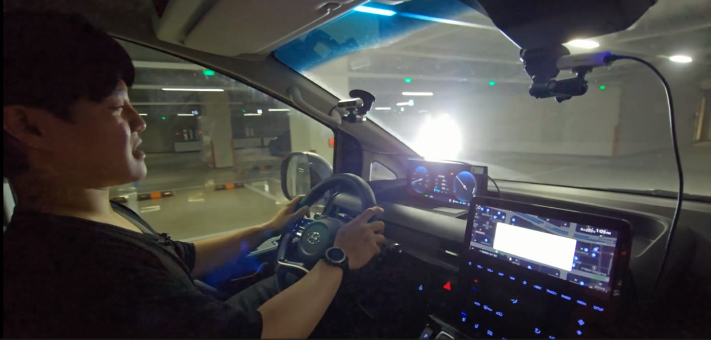
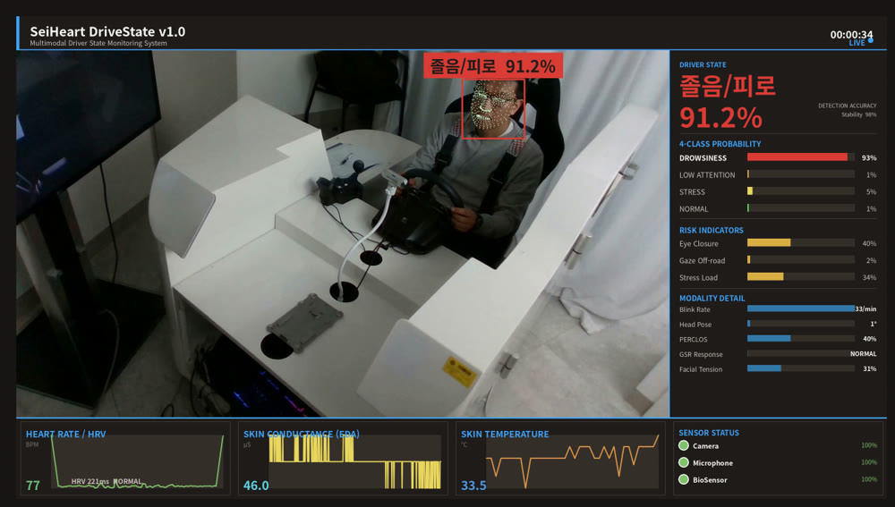
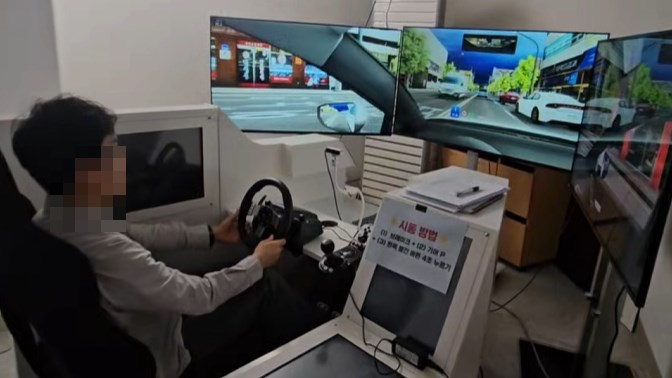
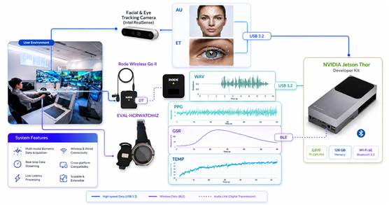
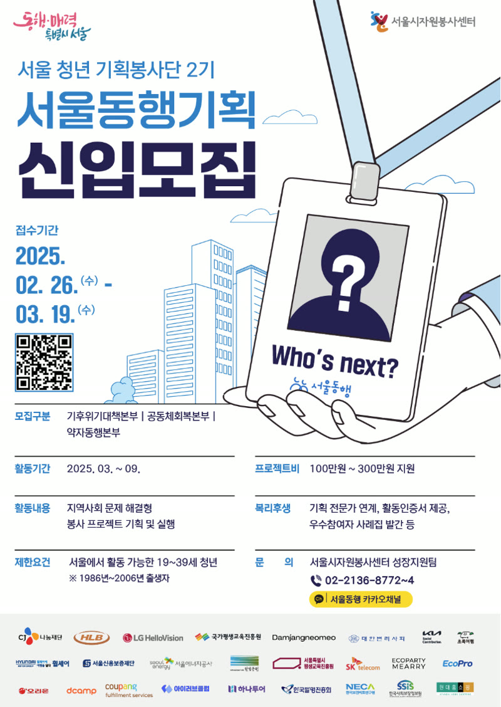
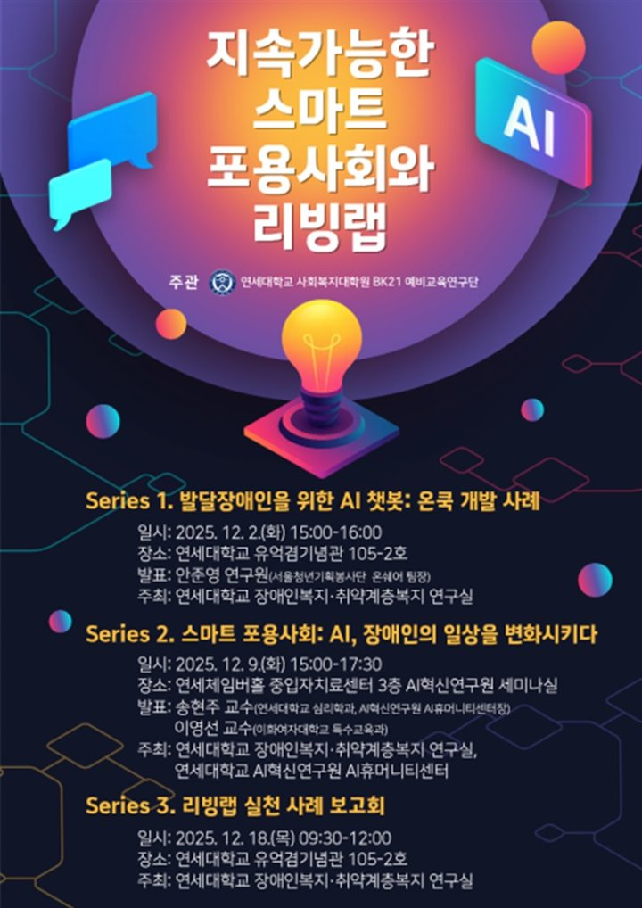

Junyoung Ahn 안준영
Multimodal affective AI — end-to-end, from dataset construction to in-vehicle system deployment

Statistics-trained AI researcher — HEART Lab, Sejong University
MOTIE driver-emotion R&D — full-stack ownership, data pipeline to in-vehicle validation
Extended into Hyundai Motor · Kia joint research — ST1 installation & HMI integration
Multimodal recognition · on-device deployment · deployed systems and prototypes
Milestones
cloud AI service developer program
Sejong University
4 filed to date
joint research followed
joint-research contract
MDPI Mathematics
interim report presented
KR 10-2991779
Selected Work


JETSON · ON-DEVICEReal-time driver emotion & state recognition — on-device (K-MER)
Live Demos
Not claims — running systems. From collection rig to in-vehicle demos, on video — click any thumbnail to watch (links are live in this PDF)
 ▶
▶
 ▶
▶
 ▶
▶
 ▶
▶


144-participant driving-simulator data campaign — sensing & validation pipeline (sensing-collector)
Driver emotion care & safe-driving intervention, on a production vehicle — Affective Care Drive
AI market analysis, vacant-store matching & 3D pop-up design — (RISE)
AI daily-planner app for developmentally disabled users — (HaruMate)
Research
Multimodal emotion recognition — bio · voice · face fusion (S-PACE)
Bio-aware driving-scene perception — Bio-Aware Slot Attention
Korean facial-expression recognition — (AU-RegionFormer)
Causal bio-behavioral fusion — (CBBF)
Autonomous research harness — LLM as worker (claude-research-engine)
Project Ecosystem
20+ repositories during the master's — vehicle edge AI · affective computing research · deployed systems & prototypes
K-MER lineage
K-MER — on-device driver emotion & state
K-MER Tesla — 2-tier LLM decisions · works offline
Temporal Slot Query — bio-aware scene perception
sensing-collector — collection pipeline
S-PACE & beyond
S-PACE (SGMT) — SCIE published · root of the line
CBBF — causal fusion · in preparation
HT-DAR — dynamic anchor routing
AU-RegionFormer — Korean FER · 298-rater study
Deployed & built
RISE — vacant-store regeneration · neural-symbolic · solo
HaruMate — daily-planner app · closed beta
OnCook — AI cooking chatbot · team lead
POPR — spatial AI engine
research-engine — autonomous research harness
Publications

HT-DAR — dynamic anchor routing fusion · CMU-MOSEI · IEMOCAP · K-EmoCon
CBBF — physiology-precedes-expression causal fusion · Knowledge-Based Systems (KBS) submission planned
All experiments orchestrated by the self-built claude-research-engine
Patents · 1 granted · 3 applications
| Title | Application No. | Status |
|---|---|---|
| FACS-based emotion recognition reflecting Korean facial characteristics 한국인 표정 특성을 반영한 FACS 기반 감정 인식 방법 및 그 장치 | 10-2025-0070458 | Granted 10-2991779 |
| Multimodal emotion recognition & expression generation, method and apparatus 멀티모달 감정 인식 및 감정 표현 생성 방법 및 그 장치 | 10-2025-0055652 | Filed |
| Multimodal AI-based driver emotion recognition system 멀티모달 인공지능 기반 운전자 감정 인식 시스템 | 10-2026-0020705 | Filed |
| Emotion recognition system using plant bio-signals 식물 바이오 신호를 이용한 감정 인식 시스템 | 10-2025-0174160 | Filed |
+ Software copyright registration — BrandSpace Engine (sole author) · C-2026-018031 · Korea Copyright Commission, 2026
Experience & Education
Beyond Research
Team Lead — AI Cooking Assistant (OnCook)

Seoul Volunteer Center AI cooking-class team lead
AAC-based AI chef chatbot for developmentally disabled users — built & operated
4.83/5 satisfaction · cable-news coverage ↗ · 16,000+ reach · LG HelloVision partnership
The field experience that seeded HaruMate
Yonsei University — invited talk & collaboration

The lab reached out after reading the volunteer project report
Paid commission — web prototype · invited talk, Dec 2025 — Series 1 speaker, Yonsei BK21 lecture series (OnCook & AI accessibility)
Recognition that came from a document, not a pitch
Spatial AI — POPR
Pop-up store auto-design engine on commercial-district data
100% solo ownership — planning, architecture, development, off lab hours